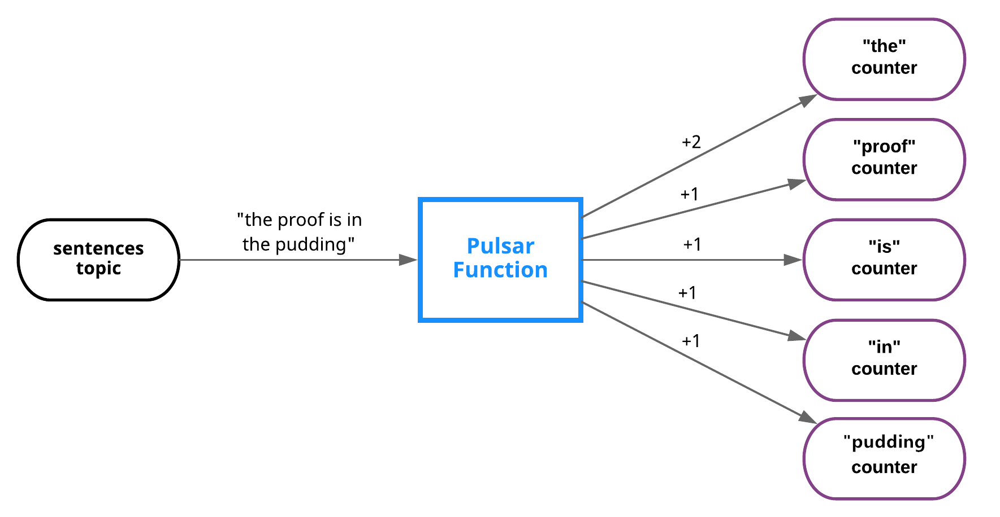
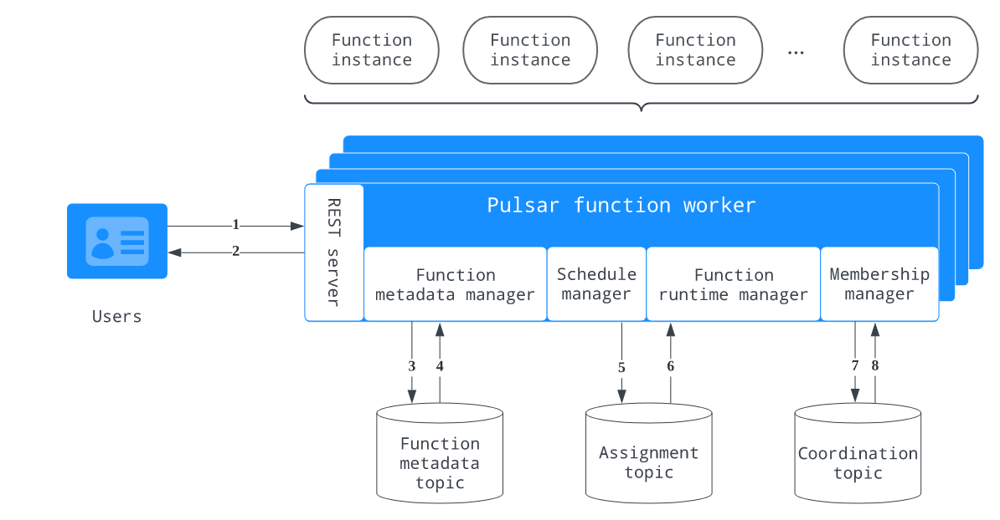

TreeviewCopyright © aleen42 all right reserved, powered by aleen42
Pulsar Functions
Pulsar Functions是什么？
Pulsar Functions是一个运行在Pulsar之上的无服务器计算框架
Pulsar Functions是一个运行在Pulsar之上的无服务器计算框架，并以以下方式处理消息：
- 使用来自一个或多个主题的消息
- 对消息应用用户定义的处理逻辑
- 将消息的输出发布到其他主题
下图说明了函数计算过程中的三个步骤：
 每次函数接收到消息时，它都会完成以下消费-应用-发布步骤:
每次函数接收到消息时，它都会完成以下消费-应用-发布步骤:
- 使用来自一个或多个输入主题的消息
- 将定制的(用户提供的)处理逻辑应用到消息
- 发布消息的输出，包括
- 将输出消息写入Pulsar中的输出主题
- 将日志写入日志主题(如果已配置)以进行调试
- 将状态更新写入BookKeeper(如果已配置)
我们可以用Java、Python和Go编写函数。例如，您可以使用Pulsar Functions来设置以下处理链.
- Python函数监听原始语句主题并“消毒”传入字符串(删除多余的空白并将所有字符转换为小写)，然后将结果发布到已消毒的语句主题
- Java函数监听经过处理的句子主题，计算每个单词在指定时间窗口内出现的次数，并将结果发布到结果主题
- Python函数监听结果主题并将结果写入MySQL表
为什么使用Pulsar Functions？
Pulsar函数在将消息路由到消费者之前对消息执行简单的计算。这些lambda风格的功能是专门设计的，并与Pulsar集成在一起。
该框架在Pulsar集群上提供了一个简单的计算框架，并负责发送和接收消息的底层细节。我们只需要关注业务逻辑。
Pulsar函数使我们的组织能够最大限度地发挥数据的价值，并享受数据的好处：
- 简化部署和操作——无需部署单独的流处理引擎(SPE)，如Apache Storm、Apache Heron或Apache Flink，即可创建数据管道
- 无服务器计算(当您使用Kubernetes运行时)
- 最大化开发人员的生产力
- 故障排除简单
实例
- 该图显示了实现经典单词计数用例的过程： 
- 该图演示了实现基于内容的路由用例的过程：

完全限定函数名
每个函数都有一个完全限定函数名(FQFN)，具有指定的租户、命名空间和函数名。使用FQFN，我们可以在不同的名称空间中使用相同的函数名创建多个函数。tenant/namespace/name函数实例
函数实例是函数执行框架的核心元素，由以下元素组成： - 消费来自不同输入主题的消息的消费者的集合
- 调用函数的执行程序
- 将函数的结果发送到输出主题的生产者
 一个函数可以有多个实例，每个实例执行一个函数的副本。可以在配置文件中指定实例数
一个函数可以有多个实例，每个实例执行一个函数的副本。可以在配置文件中指定实例数
函数实例中的使用者使用FQFN作为订阅者名，以基于订阅类型在多个实例之间实现负载平衡。订阅类型可以在函数级别指定
每个函数都有一个单独的FQFN状态存储。我们可以指定一个状态接口，以便在BookKeeper中持久化中间结果。其他用户可以查询函数的状态并提取这些结果
函数worker
函数worker是一个逻辑组件，用于在Pulsar Functions的集群模式部署中监视、编排和执行单个函数
在函数工作者中，每个函数实例都可以作为线程或进程执行，具体取决于所选的配置。或者，如果Kubernetes集群可用，则可以在Kubernetes中以StatefulSets的形式生成函数
下图说明了函数工作者的内部架构和工作流：  函数工作者形成了一个工作者节点集群，其工作流程描述如下：
- 用户向REST服务器发送请求以执行函数实例
- REST服务器响应请求并将请求传递给功能元数据管理器
- 函数元数据管理器将请求更新写入函数元数据主题。它还跟踪所有与元数据相关的消息，并使用函数元数据主题持久化函数的状态更新
- 函数元数据管理器从函数元数据主题读取更新，并触发调度管理器计算分配
- 日程管理器将作业更新写入作业主题
- 函数运行时管理器侦听分配主题，读取分配更新，并更新其内部状态，该状态包含所有工作人员的所有分配的全局视图。如果更新更改了工作对象上的赋值，函数运行时管理器将通过启动或停止函数实例的执行来具体化新的赋值
- 成员管理器要求协调主题选举一个领导工作者。所有工作人员都订阅故障转移订阅中的协调主题，但活动的工作人员成为领导者并执行分配，从而保证该主题只有一个活动消费者
- 成员管理器从协调主题读取更新